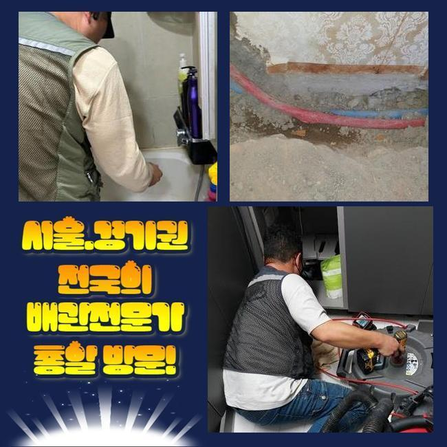
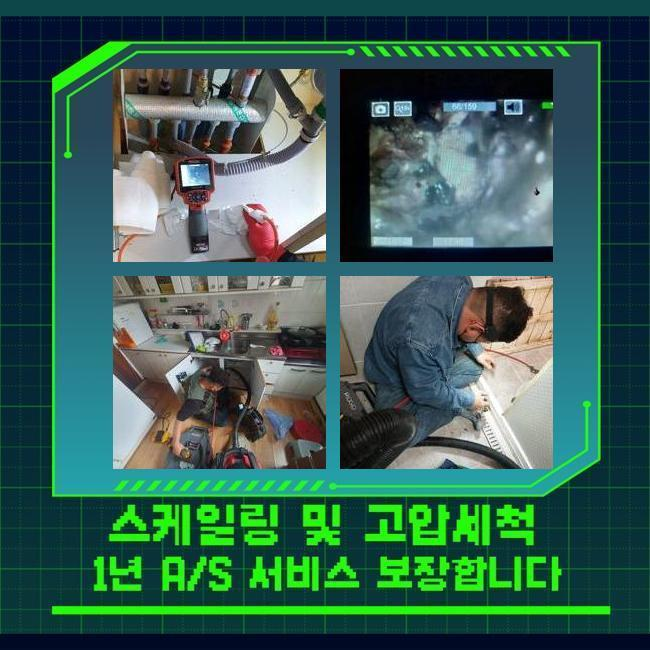
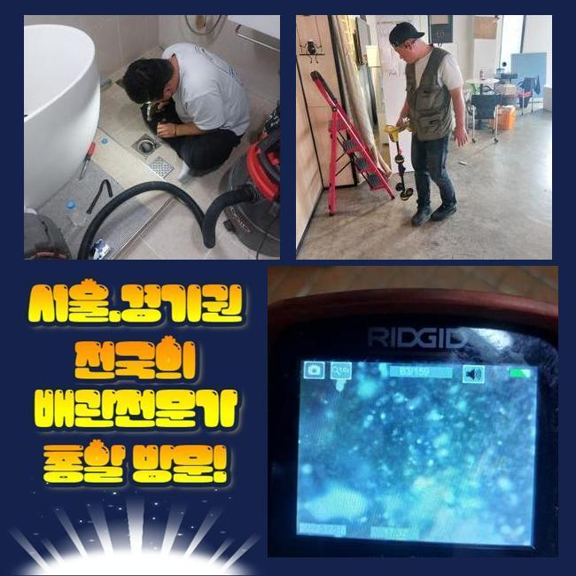
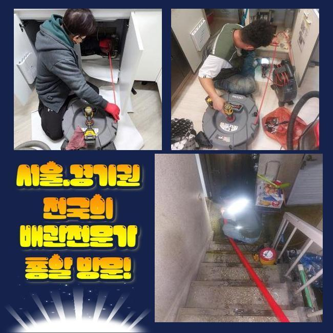
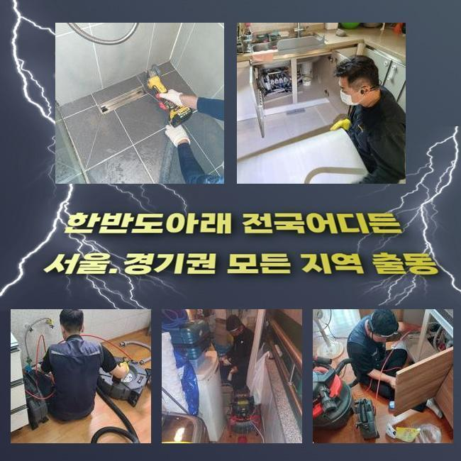
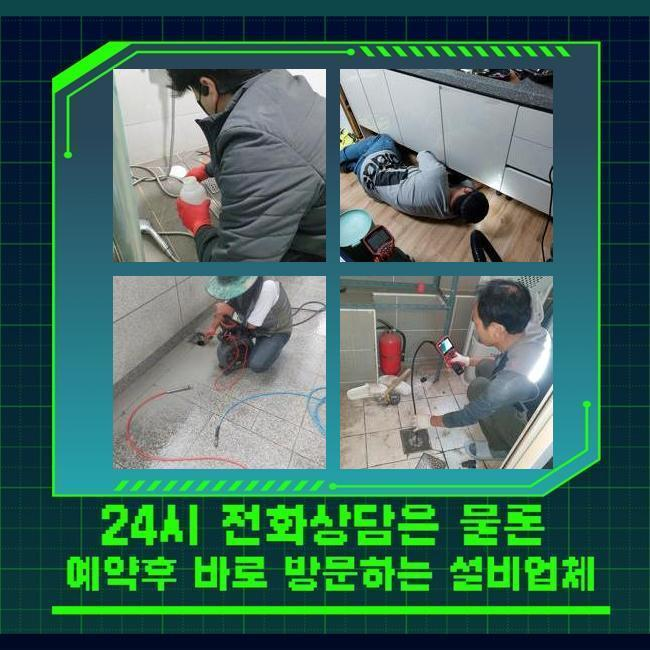
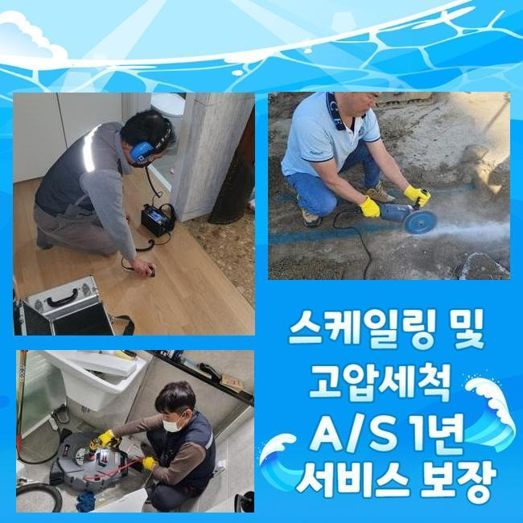

🏠 파주 교하동화장실바닥막힘 파평면 배관내시경카메라 설비공사
파주 하수구막힘 전문 시공 후기

📋 작업 개요
- 위치: 파주
- 서비스 유형: 하수구막힘, 배관막힘, 뚫는업체, 배관청소, 고압세척, 설비공사, 악취차단
- 작업 일시: 2024. 11. 7. 11:58
- 업체명: 하수구수사대 (010-5615-2118)
🔍 문제 상황
파주 교하동화장실바닥막힘 파평면 배관내시경카메라 설비공사
불특정한 인원들이 드나드는 빌딩같은 경우에 느닷없이 배수가 안된다면 당혹스러운 사태가 발생됩니다
거기에 더해 조급하게 일상적인 수리만 하는 기술자를 부르시는 분들이 많죠
상식적으로 하수구에 관한 기술력이 적어도 얼마 정도까지 정리는 할거라고 간주하기 때문이에요
또 지출도 절감할수 있다 판단하실수도 있습니다
그렇지만 이러한 사태일수록 풍부한 경력과 능숙함을 소지한 전문가를 만나셔야 지출과 시간소모를 감소시킬수 있답니다
금번에 방문한데는 공동 배수관의 막힘현상으로 긴급히 문의를 주셨는데요
알려주신 주소로 찾아갔고 시설 담당자께서 지하실에 배수쪽 관리위치로 이끄셨고 내부의 정황을 확인하였죠
여러인원이 쓰는 공용 주거지는 정기적으로 관리해야 급작스러운 말썽이 생겨나지 않는답니다
한 두 거주자들이라도 배수시스템에 영향을 끼치는 활동이 이루어지면 연쇄적으로 공용문제로 이어지기도 해서죠
그러므로 모두가 볼수있는 공간에 이런 행위를 멈춰달라는 고지를 주기적으로 이행하는게 합당합니다
관로가 차단되는 동기는 다양해요
적체된 석회물질이 원인이기도 하고 인테리어 할때 발생되기도 해요
이건 추측말고 관측으로 파악할수 있어요

🔎 원인 분석
💡 전문가 진단: 정밀 진단 장비를 사용하여 슬러지의 고착 여부를 판명하고 타격/세척 작업을 실시했습니다.
일단하여적으로 배관카메라로 공용배관을 살펴보면서 사태를 분석하였어요
해당 업무를 하려 아침 몇시간은 잠깐 수돗물 사용을 중지해서 세대원들에게 최대한 피해가 안가도록 가급적 조속히 일을 끝내야 했죠
다수의 인원이 가정내로 들어오는 오후까지는 수리가 마무리되게 열심으로 일을 해나갔어요
보편적인 촬영장비론 아파트 중앙관로 안쪽을 세세히 관찰하는 것이 역부족이라 고가의 기기가 필요하죠
저희팀은 여러종류의 배관내시경과 배수관정비 기기들을 보유하고 있기 때문에 다양한 문제들에도 즉각적으로 해결할 능력이 있는겁니다
고압의 물세척기기를 써서 선제적으로 이물제거를 시행하고 또다시 진단해봤는데 하수관 막힘이 별로 목견되지 않았네요
틈틈이 이물들이 존재했지만 그때문에 막힌건 아니라 판단내릴수 있었답니다
어설픈 사람이 파악했다면 이렇게까지만 고지하고 귀가했을 가망이 커요
그것에 반하여 우리팀은 전체적 건물의 상황을 토대로 공정을 실시하고 있어요
안쪽의 배수관보단 외부의 시설물에 막힘원인이 존속할 가망이 크다고 느껴졌죠
관리소장님께 내시경기기를 동시에 확인시켜드린 다음에 안내를 드렸어요
건물 안보다는 밖의 설비를 살펴보려 재가를 받고 바로 시공을 했어요
탁수가 존재해다면 석션장비로 처리하고 본과정에 들어갔겠지만 다행스럽게도도 수도이용을 제한하여 작업 능률을 높였기에 조속히 업무를 속행하게 되었죠
초음파기계로 확인하니 오물과 석회물질이 얽혀있는 정황을 보게 되었어요

🔧 작업 과정
이때문에 파이프도 좁아졌죠
샤프트기기를 깊숙하게 투입시켜서 슬러지를 처치하기로 하였어요
백회질과 침전물을 들어냄과 함께 물세정 기기를 가동하여 관로클리닝을 시행하죠
그러한 성분이 외수시설물로 빠져나가지 못하도록 조심스럽게 작업합니다
상식적으로 고수압 세척기는 일반인들은 사용하는 상황이 없다고 볼수 있는데요
이번 방문한 장소는 메인파이프와 바깥의 배관에서 트러블이 발발한 것이기에 고압물세척기 가동을 결단한겁니다
여러 개인분들이 고압물세정 청소라는 명칭을 알아보시고 우리들에게 방문 요청을 하시는데요
미미한 체증문제에 고압기기를 써버리면 설비에 크랙을 유발하는 경우도 많아서 대상이 적절하였는가에 대해서 판단이 일단입니다
해당 정황에는 공사에 소요되는 시간과 비용 등이 증대될 가망성이 있다는걸 기억하시길 바라요
또 시공현장에서 발생한 노폐물들은 엄격히 구분하여 처리해야죠
그런 물질들이 빠져나가 버리면 생각지않은 트러블을 가져올수 있기 때문에 신중하게 정리해 나가야 합니다
그러하기에 뒷정리는 면밀하게 하고 있는겁니다
저희팀은 이와 관련한 총체적인 작업을 순차적으로 이행하고 이를 통하여서 비정상 사태에 직면하지 않도록 하죠
수압을 높여서 청소를 시행하였더니 주변으로 여러가지 이물들이 배출됐어요
강한 물의 압력으로 잔재들을 밀어내고 토출된 것들은 흡입기계로 말끔하게 정리할수 있었습니다
상당히 커다란 뭉텅이가 배출되는 것을 확인하였고 장시간 관리안한 결과물이었다고 판단되었어요
시기에 맞게 우리팀이 이동한 작업차가 준설업무에도 합당하여 물기가 누증된 침전물들도 신속히 처리가 가능했죠
다수 인원이 거주하는 공간은 노후화되면서 그러한 장애가 증가하게 됩니다
금번에 청소 정리를 하면서 주기적인 보존관리가 요망된다고 말씀드렸어요
가정 내 배관에서 외부시설로 방출하는 유분을 줄이는 것이 합당하며 딱딱한 찌꺼기는 배관이 아닌 휴지통에 분류해서 처리해야 돼요
그건 보편적으로 알고는 있지만 적절하게 실천되기 힘든 사안이죠
대표로 들 수 있는 것이 변깃물을 내릴때 보습휴지를 버리는 행위가 있어요
쉬이 물과 함께 분해될거라고 여기실수도 있으나 실상은 전혀 안그렇다는걸 설명드립니다


✅ 작업 완료
금번 하수구가 막혀 곤란함을 체감하신 내용을 거울삼아 추후 또 이런고장이 안생기게 주거자들께 설명을 해달라고 이야기드렸어요
건축물의 책임자에게 우리팀의 공사과정을 말씀드리고 청소된 하수관 안쪽을 내시경설비로 확인토록 해드렸죠
본질적인 청소과정을 말씀드리는 것 외로 결과를 투명하게 제시해 드리기에 확실한 신뢰감을 제공해 드릴수 있었죠
흐트러진 주변도 정리해드리고 의뢰자께 보고한 뒤에 뚫음을 완료하였습니다
우리들은 공용배관을 포함하여 누설문제가 중첩되어 이전에 방문한 기술자가 고치지 못한 것들도 솔선하여 해결해드리고 있죠
증세의 난이도를 구별하지 않고서 관로에 문제가 생겼다면 어느곳이든지 빠르게 이동하여 조치할 것이니 편안한 마음으로 의뢰하시길 바라요 빠른 해결책을 제시해드릴게요




⚠️ 하수구 배관 막힘 예방 및 관리 가이드
- ✅ 머리카락, 비닐, 물티슈 등 물에 분해되지 않는 이물질은 하수구 유입을 절대 금지해 주세요.
- ✅ 하수구 거름망을 씌우고 모여진 이물질은 주기적으로 쓰레기통에 바로 비워주셔야 합니다.
- ✅ 배관 노후가 심할 경우 이물질이 더 쉽게 걸리므로 주기적인 배관 세척(고압세척 등)을 권장합니다.
- ✅ 작업 후 1년 이내 재발 시 하수구수사대에서 무상 A/S 보증 서비스를 제공합니다.
💡 핵심 정리
- 확실한 장비 작업(내시경 점검 및 샤프트 스케일링)으로 원인을 뿌리 뽑습니다.
- 작업 후 1년 이내에 동일한 부위 재발 시 100% 무상 A/S 서비스를 보장합니다.
- 서울 · 경기 · 인천 전 지역에 24시간 언제든 긴급 출동할 수 있도록 항시 대기 중입니다.
❓ 자주 묻는 질문 (FAQ)
🚨 파주 하수구막힘 문제로 고민이신가요?
정확한 원인 진단과 확실한 시공으로 재발 없는 해결을 약속드립니다.
24시간 긴급 출동 | 서울 · 경기 · 인천 전지역 | 1년 내 재발 시 무상 A/S